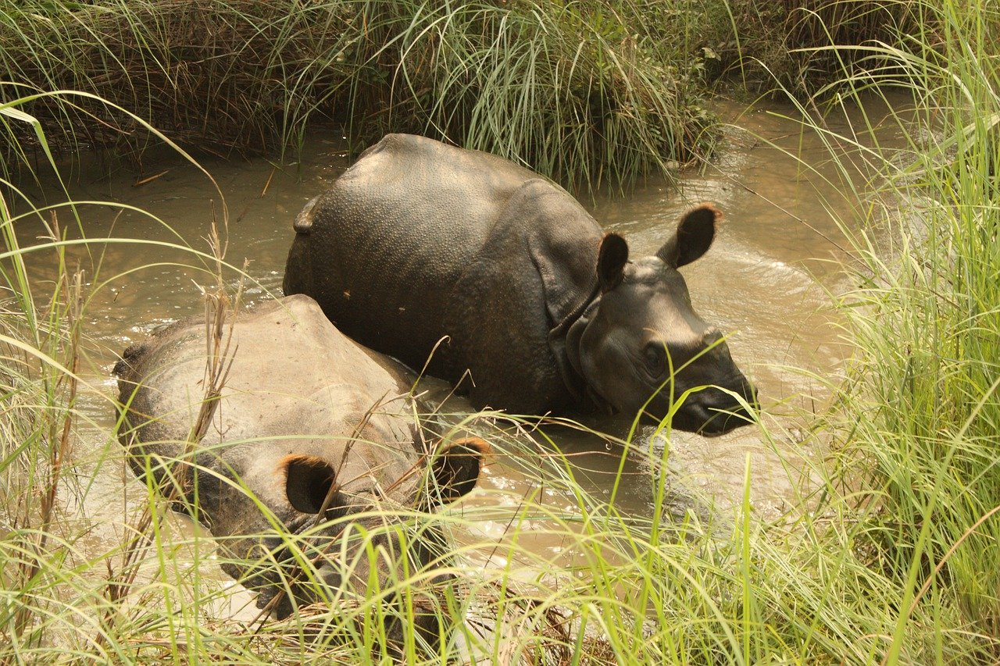

Outside Kathmandu Valley

Janakpur
Janakpur is the capital of the ancient state of Mithila and the Janaki Temple, located in the center of the city, is well known in the Hindu Kingdom. Sita the wife of the legendary hero Ram was born in Janakpur. Throughout the year, many pilgrims come to pay their respects to Ram and Sita who are the main religious attractions in Janakpur. The city is thronged by worshippers and visitors alike especially during the festival of Bibah Panchami. This annual festival is celebrated on the occasion of Ram and Sita’s marriage and their wedding ceremony is enacted throughout the week. During this period, the city is enlivened by the wedding festivities.
Ram and Sita (Janaki) are the two central characters of the great Hindu epic Ramayan. In the story, Ram strings a bow that originally belonged to Lord Shiva the Destroyer and in the process, the bow breaks into three pieces. One piece flies up to heaven. Another falls down into the depths of the underworld. Today, there is a huge pond called DhanushSagar above the very spot. The third piece flies to present day Dhanushadham, about 40 kilometers from Janakpur. There, visitors will see huge rocks shaped liked a bow. Thus, after Ram’s successful attempt to string the bow, Janaki’s father, King Janak gives his daughter’s hand in marriage to the brave prince of Ayodhya
Annapurna
About two-thirds of the trekkers in Nepal visit the Annapurna region. The Annapurna Conservation Area Project-ACAP (7,629 km.) is rich in natural beauty, flora and fauna. Regarded as one of the best trekking trails in the world, Annapurna region spreads around Kaski, Mustang, Manang and Lamjung districts of Central Nepal. The area reaches as high as 8,091m. of Mt. Annapurna starting with an altitude of 790m. Ghorepani Poon Hill trek, Annapurna Base Camp Trek, JomsomMuktinath trek, Annapurna circuit trek etc are the popular trekking trails in this region. Ghandruk and Ghorepani provide panoramic view of the Annapurna ranges with eye catching blossom of rhododendron in the hills. Jomsom is the turning point of Annapurna Circuit. One can also visit Tilicho Lake (4,919 m) which is located at the southeast of Jomsom and the famous Hindu religious sites Muktinath Temple.
The ANNAPURNA SANCTUARY is the most intensely scenic short trek in Nepal, and one of the most well-trodden – there are lodges and tea stops at hourly intervals or less, until the highest sections at least. The trail takes you into the very heart of the Annapurna range, passing through huge hills in Gurung country with ever-improving views of the mountains ahead, then following the short, steep Modi Khola, before you pass into the most magnificent mountain cirque: the Sanctuary. Wherever you stand, the 360-degree views are unspeakably beautiful, and although clouds roll in early, the curtain often parts at sunset to reveal radiant, molten peaks.
Chitwan
Surrounding Royal Chitwan National Park in southern Nepal is one of the best planned and most intelligently developed tourist areas in Nepal. Not only does it offer a wide variety of resorts and lodges, it is also easy to reach ?by road or by air. Regular flights are scheduled by Royal Nepal Airlines and other airlines to Meghauli, Simara and 13haratpur. Many resorts provide coach service. Local buses offer a choice between a night ride and a day ride. Royal Chitwan National Park is perhaps the best park in Nepal for seeing animals in the wild. In the earlier part of the century, when rapid deforestation was devastating Nepal’s southern Terai belt, His Majesty’s Government of Nepal intervened and proclaimed the Chitwan area a national park.
At one point in time, Chitwan was not protected by government fiat but by malaria?spreading mosquitoes. The whole of the Terai belt was infested by mosquitoes and only the hardiest settlers survived. Even travellers who were just passing through would fall prey to the disease. To the lahure, enlisted soldiers in the Indian or the British army, a journey through the Terai was as dangerous as being on the battlefield. People considered this land useless and unsalvageable and, in consequence, animals flourished in the Chitwan wilderness.
However, the Rana prime ministers from Kathmandu did not consider the place entirely useless; for them, it was a favorite holiday?resort. They were willing to brave malaria to enjoy the sport of hunting tigers, leopards, and rhinoceros that abounded in these jungles. Nearly every eminent foreign visitor was invited to Chitwan for a hunt. Today, one can see photographs of past foreign notables standing over their hunting trophies (mainly tigers), with their safari elephants in the background.
As mosquitoes began to be eradicated from the Teraithrough the use of DDT, the land opened up. Land was cheap, and in some cases free for the taking. Anyone needing farmland had only to cut down the trees and start cultivating the soft soil, enriched by hundreds of years of natural fertilization. Rapid deforestation was the result. Animals that had flourished in the hunting era were killed by the settlers because they attacked people, livestock arid crops.
The Government of Nepal declared the Chitwan region a national park, outlawed settlement and deforestation within its boundaries, and a campaign to save the animals began. Projects carried out with the help of friendly nations have revived the animals that remained. Though the Terai is certainly not what it once was, the preserved portion within the Chitwan National Park is still a treat for animal lovers.
Royal Bengal tigers roam the region; one?homed rhinos can be seen charging through the underbrush, feeding and even courting. The Rapti River has been dammed to form a man?made lake called Lamital where water?birds and marsh mugger peckers and many other birds are found in plenty in these forests.
Elephant grass, five to six feet tall, provides excellent camouflage for animals. This grass serves as food for the gaur (a local bison), rhino and other herbivores. Once a year, local people are allowed into the park area to cut grass. The grass is dried, and used to thatch roofs or stored for food for the domestic animals during the dry season.
Resorts and lodges are available to suit one’s travel budget; most include elephant safaris, jungle walks, canoeing and a variety of cultural activities in their programs.
Reservations for accommodations can be made at the Kathmandu offices of Chitwan resorts and lodges, with selections ranging from the most luxurious to those with simple food and shelter. On a village tour, you can observe the culture of the Tham people. Tharu dance and song performances are included in most resort and lodge entertainment. A visit to Chitwan is a visit filled to the brim with activities, whether you stay two days or a week.
Gorkha
The then small kingdom of Gorkha, founded by king Drabya Shah in 1560 A. D. became famous during the dynasty of Ram Shah (1604-1641 A.D.), who earned the reputation of being just to his people. There was a famous proverb in those days which said that one should go to Gorkha if he were looking for justice.
In the middle of eighteenth century there were hundreds of small kingdoms and principalities in what is today’s Nepal. The great Prithvi Narayan Shah took the mammoth task of unifying Nepal in the eighteenth century. The Gorkha soldiers under his dynamic leadership eventually succeeded in conquering the Kathmandu valley. The capital of greater Nepal was shifted to Kathmandu since then. But this beautiful township has always remained as the center of attraction for many Nepalese as well as foreign visitors.
Everest
The Everest region in Nepal is more than just climbing and trekking, it is a life changing experience and some see it as a journey close to achieving Nirvana. Located in the north eastern province of Nepal, this region is in a world of its own with vast glaciers, icefalls, the highest mountains, deep valleys, precarious settlements, and hardy people challenging the harshest conditions thrown at them by nature in the thin air of high altitude.
Trekking in the Everest region is a challenge because of the altitude, but the infrastructure for trekking is highly developed and you rarely have to walk more than an hour to reach the next trekking lodge. On the plus side, this means high-altitude Mars bars and an unrivalled trekking camaraderie. On the flip side, viewpoints are crowded and lodges can fill up by mid-afternoon. If splendid isolation is more your thing, focus on the side valleys or stay in smaller lodges between the main stops.
To get a good look at Everest, you’ll have to spend at least four nights above 4000m and at least one at around 5000m. At these altitudes, there is a serious risk of developing acute mountain sickness (AMS) and you must know the signs (see Altitude). Everest is also the coldest of the major treks, so you’ll need a good sleeping bag, several layers of warm clothes, and sturdy boots that will keep out snow. The rental shops of Namche, in Khumbu, allow you to stock up on high-altitude gear and return it on the way back down. Because of weather, the trekking “window” is especially short in Khumbu – early October to mid-November, and late March to late April – and this, in turn, creates a seasonal stampede on the trails and at the Lukla airstrip. Winter isn’t out of the question
Langtang
This is one of the most accessible trekking regions near the Kathmandu Valley with short day hikes or week-long ventures into the lake district. An ideal region if you are short on time but still want to trek the Himalayas and experience the wonderful cultures of the native Tamangs.
The Langtang Valley Trek is characterised by steep, jungle covered valleys at lower elevations, and wide, barren alpine valleys once the trail climbs to Langtang Village.
It is best to visit the park in October and November, after the monsoons have ended and before winter sets in. The sky is clear and the leaves are colourful, providing a photogenic background. March to May is also a good time to visit as the wildflowers and rhododendrons are blooming.
Langtang Valley was severely impacted by the 2015 Nepal earthquake. The village of Langtangwas completely destroyed by an avalanche in which several hundred residents and foreigners perished. Though most of the trail has been repaired, the scars are still visible in the form of damaged bridges, abandoned villages and crumbling structures.